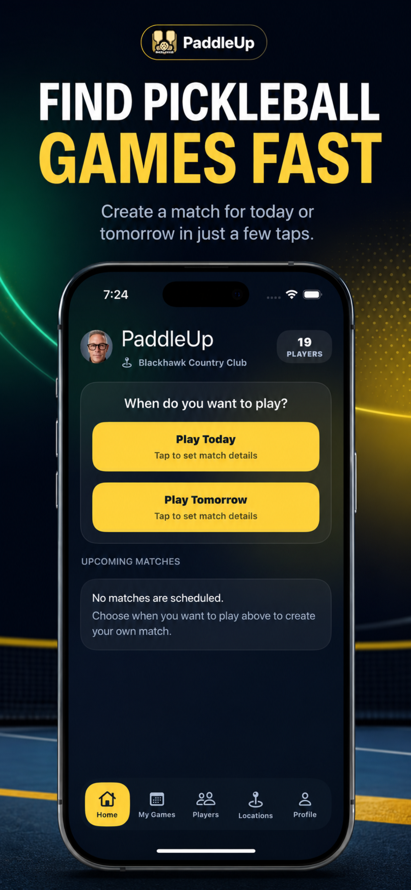
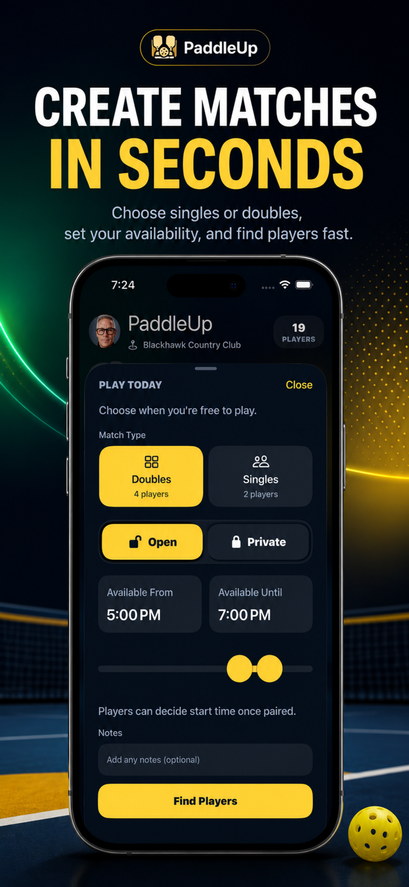
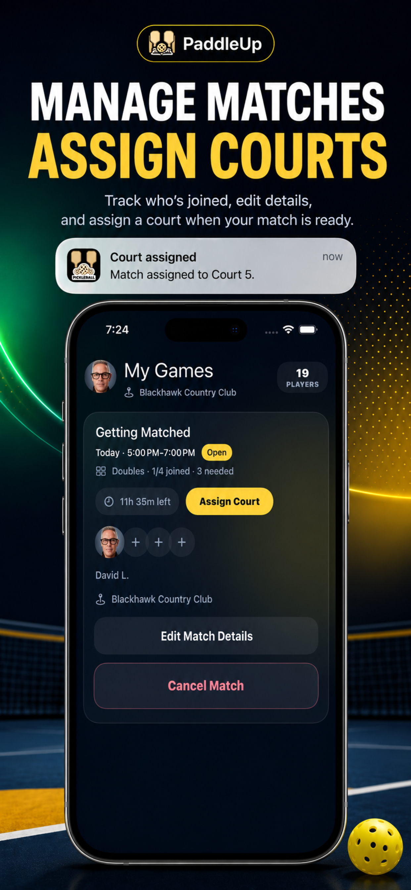
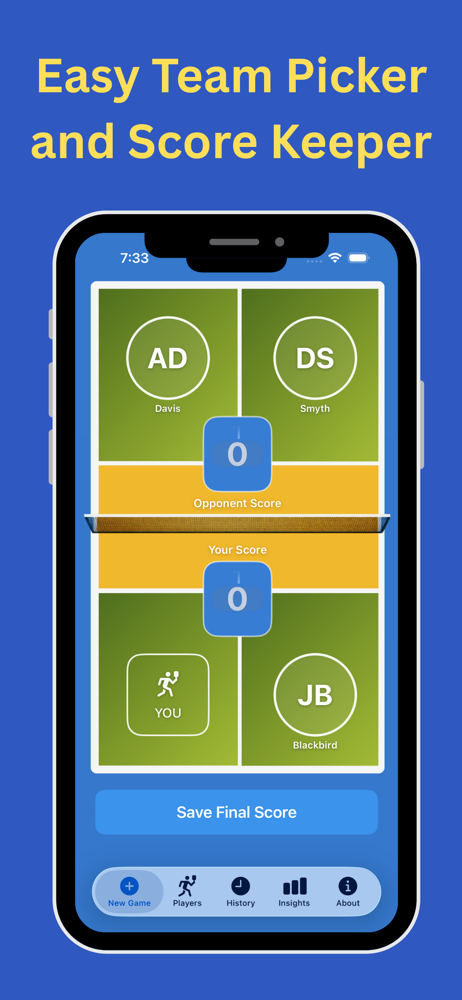
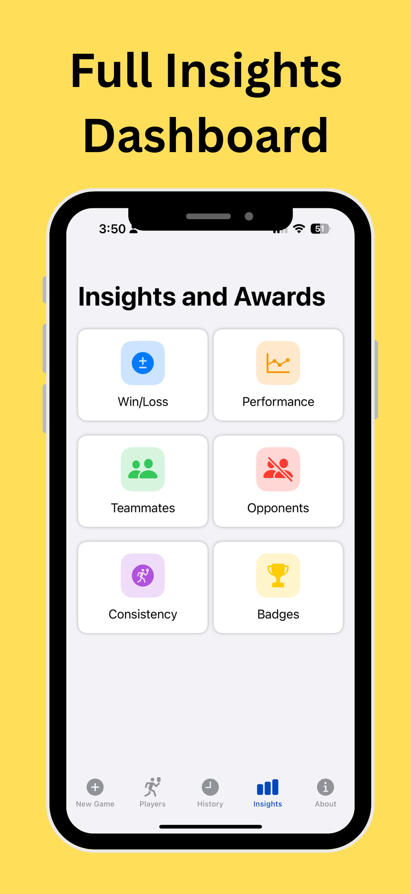
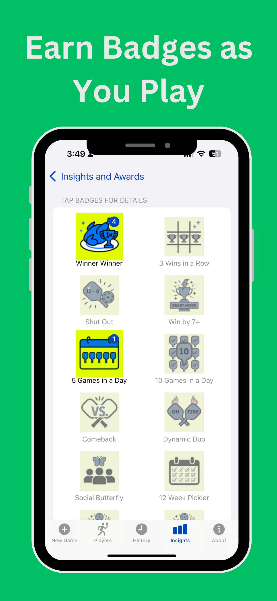

New
PaddleUp
Less texting. More playing.
PaddleUp helps pickleball players turn “Who wants to play?” into a real match. Create open or private games, choose singles or doubles, invite your favorite players or groups, and get alerts as games come together.
- Create open matches for nearby players to join
- Set up private matches with friends or groups
- Coordinate singles or doubles with match notes, court assignment, and time updates
- Stay informed with game alerts as players join and details change
PaddleUp is designed for clubs, resorts, neighborhoods, and pickleball communities where players want a faster way to get on court.



Available Now
Pickleball Tracker
Play. Track. Improve. Repeat.
Pickleball Tracker makes it easy to log games, track wins and losses, remember teammates and opponents, and understand how your game is improving over time.
- Log matches from iPhone or Apple Watch
- Track your record, scoring trends, players, and history
- Unlock achievements and keep a personal pickleball journal
- Use insights to make smarter decisions on court



Which app should I use?
Use PaddleUp before you play when you want to find players, create a match, or coordinate court details.
Use Pickleball Tracker after you play when you want to record the result, remember who played, and see your progress.
Built for real pickleball communities
These apps were built around the everyday rhythm of pickleball: finding players, getting a court, playing the match, and learning from every game.